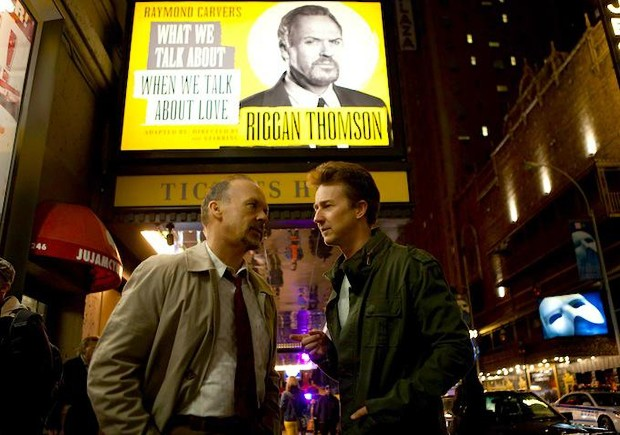

- Birdman
- No Country For Old Man
- Pulp Fiction
Bird man
Former cinema superhero Riggan Thomson (Michael Keaton) is mounting an ambitious Broadway production that he hopes will breathe new life into his stagnant career. It's risky, but he hopes that his creative gamble will prove that he's a real artist and not just a washed-up movie star.

As opening night approaches, a castmate is injured, forcing Riggan to hire an actor (Edward Norton) who is guaranteed to shake things up. Meanwhile, Riggan must deal with his girlfriend daughter and ex-wife.